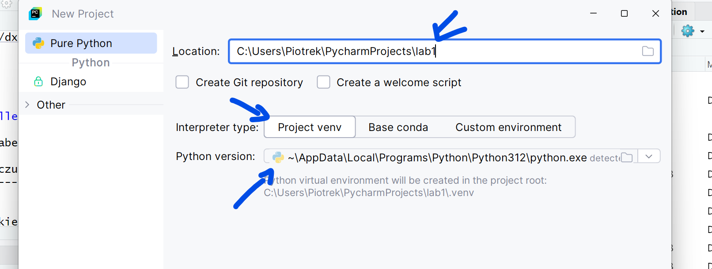
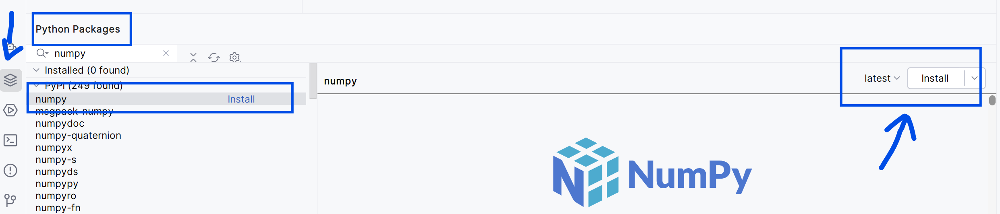
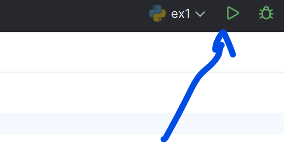
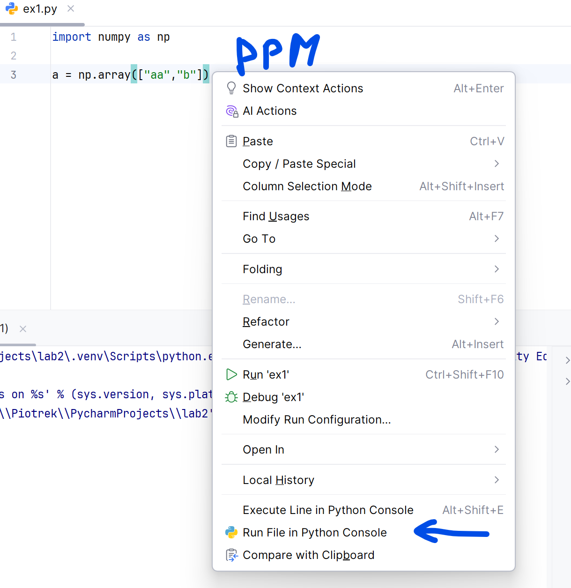

NumPy jest biblioteką Pythona służącą do obliczeń naukowych.
Zastosowania:
- algebra liniowa
- zaawansowane obliczenia matematyczne (numeryczne)
- całkowania
- rozwiązywanie równań
- …
Instalacja pakietu NumPy - opcja łatwiejsza “do przeklikania”
- Tworzy projekt w PyCharm z venv - wersja 3.12.

- Za pomocą zakładki po lewej stronie na dole wyszukujemy pakiet i wybieramy instalację

Instalacja pakietu NumPy - opcja terminala
Komenda dla terminala:
python -m pip install numpy
python -m pip install numpy==2.2.0
Import biblioteki NumPy
Podstawowym bytem w bibliotece NumPy jest N-wymiarowa tablica zwana ndarray. Każdy element na tablicy traktowany jest jako typ dtype.
numpy.array(object, dtype=None, *, copy=True, order='K', subok=False, ndmin=0, like=None)
- object - to co ma być wrzucone do tablicy
- dtype - typ
- copy - czy obiekty mają być skopiowane, domyślne
True
- order - sposób układania: C (rzędy), F (kolumny), A, K
- subok - realizowane przez podklasy (jeśli
True), domyślnie False
- ndmin - minimalny rozmiar (wymiar) tablicy
- like - tworzenie na podstawie tablic referencyjnej
import numpy as np
1a = np.array([1, 2, 3])
print("a:", a)
2print("typ a:", type(a))
3b = np.array([1, 2, 3.0])
print("b:", b)
4c = np.array([[1, 2], [3, 4]])
print("c:", c)
5d = np.array([1, 2, 3], ndmin=2)
print("d:", d)
6e = np.array([1, 2, 3], dtype=complex)
print("e:", e)
7f = np.array(np.asmatrix('1 2; 3 4'))
print("f:", f)
8g = np.array(np.asmatrix('1 2; 3 4'), subok=True)
print("g:", g)
print(type(g))
- 1
-
Standardowe domyślne.
- 2
-
Sprawdzenie typu.
- 3
-
Jeden z elementów jest innego typu. Tu następuje zatem rozszerzenie do typu “największego”.
- 4
-
Tu otrzymamy tablicę 2x2.
- 5
-
W tej linijce otrzymana będzie tablica 2x1.
- 6
-
Ustalenie innego typu - większego.
- 7
-
Skorzystanie z podtypu macierzowego.
- 8
-
Zachowanie typu macierzowego.
a: [1 2 3]
typ a: <class 'numpy.ndarray'>
b: [1. 2. 3.]
c: [[1 2]
[3 4]]
d: [[1 2 3]]
e: [1.+0.j 2.+0.j 3.+0.j]
f: [[1 2]
[3 4]]
g: [[1 2]
[3 4]]
<class 'numpy.matrix'>
Uruchamianie - tryb “Run” (wykonawczy)
Run - zielona strzałka u góry.

Uruchamianie - tryb “Run in Python Console” (interaktywno-wykonawczy)

Ćwiczenie (ex1.py):
- Stwórz proste tablice:
\(\begin{bmatrix}
1 & 2 & 7\\
6 & -3 & -3
\end{bmatrix}\)
\(\begin{bmatrix}
6 & 8 & 9 & -3
\end{bmatrix}\)
\(\begin{bmatrix}
4 \\ 3 \\-3 \\-7
\end{bmatrix}\)
\(\begin{bmatrix}
bb & cc & ww & 44
\end{bmatrix}\)